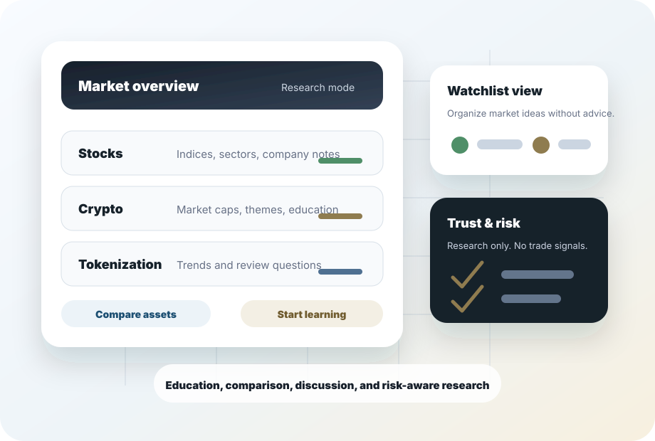

Explore Market Insights
Review market themes, major asset categories, and plain-language context without hype or trade urgency.
Market insights and research
On-Chain Registry helps users track markets, compare assets, follow investment ideas, learn key concepts, and join structured discussions across stocks, crypto, and tokenized assets.

About
On-Chain Registry is a market insights and research platform that helps users explore stocks, crypto, tokenization trends, and investment ideas with more clarity. It exists to make market research, asset tracking, and financial education more organized, transparent, and accessible.
What you can do on On-Chain Registry
Review market themes, major asset categories, and plain-language context without hype or trade urgency.
Organize a research watchlist and personal market view without connected accounts, trading, or performance promises.
Compare assets by category, concept, risk factors, and research notes so differences are easier to understand.
Build vocabulary around markets, diversification, volatility, liquidity, custody, tokenization, and risk.
Use structured discussion prompts to exchange ideas while keeping decisions personal and independently verified.
Follow tokenization as a research topic without implying token issuance, ownership records, compliance coverage, or availability.
Brand story
Markets move fast, commentary gets loud, and new categories can be difficult to evaluate. On-Chain Registry is designed around calmer research habits: define the topic, compare the asset, understand the risk, learn the concept, and discuss ideas without treating discussion as direction.
Market overview
Market overviews should help users see categories and themes clearly. They should not imply forecast certainty, trade timing, or personalized recommendations.
Follow sectors, company notes, valuation topics, and macro context as research inputs.
Review categories, networks, custody concepts, liquidity topics, and risk factors.
Track tokenization as an educational trend, not as a product offer or ownership claim.
Keep research ideas, questions, and comparison notes in one calm, readable structure.
Insights and analysis
Insights should help users ask better questions, compare assumptions, and understand context. They are not signals, forecasts, instructions, or personalized recommendations.
Explore Market InsightsPortfolio tracking
Use a watchlist-style view to group stocks, crypto assets, themes, and research notes. The static site does not connect external financial accounts.
Track Your WatchlistLearning center
Learn core concepts before comparing assets: volatility, market capitalization, liquidity, risk, diversification, custody, and tokenization vocabulary.
Start LearningCommunity forum
Community prompts can support structured discussion and shared learning without trade mirroring, hype cycles, or claims that one participant’s view should direct another person’s decision.
Join the DiscussionTokenization trends
Follow the vocabulary, market structure questions, institutional interest, and unresolved risks around tokenized assets without implying operational functionality.
Discover Tokenization TrendsTrust and risk disclosure
On-Chain Registry is for education, organization, and general research. It does not provide financial, legal, tax, securities, compliance, or investment advice.
Trust and risk disclosure
The public site stays static and educational. It avoids personalized investment advice, AI market predictions, guaranteed-sounding assistant language, trade signals, paid advisory services, sponsored financial content as a core feature, data monetization, and premium investment strategies.
Start with research
Explore trends, compare assets, learn concepts, and discuss ideas in a structured research environment that stays calm, educational, and risk-aware.